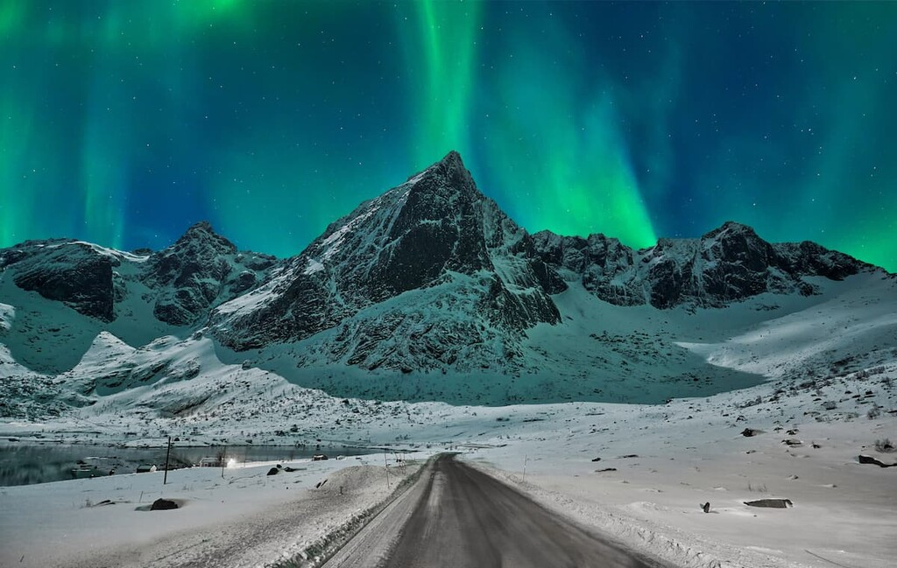
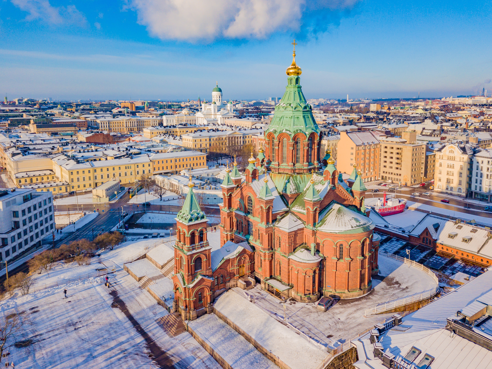

Nejnovější příspěvky
Finské sauny
Autor: Martin Mikeš | Datum: 9. prosince 2024
Finské sauny jsou využívány skoro v každé domácnosti a jsou součástí finské tradice.

Ve finské sauně jsou na kamnech kameny, na které se čas od času nalévá voda, aby vzniklá pára na
chvíli zvýšila vlhkost vzduchu. Vlhkost vzduchu v sauně je obvykle relativně malá, několik desítek
procent. V saunových kamnech se obvykle topí dřevem, ale velmi častá jsou elektrická kamna, zejména
v bytech.
Polární záře
Autor: Martin Mikeš | Datum: 8. prosince 2024
Finsko je jedním z nejlepších míst na světě, kde můžete sledovat polární záři.

Tuto neuvěřitelnou hru žluté, zelené, růžové a fialové barvy můžete v Laponsku vidět od září do
března. Bývá viditelná až 200 dní v roce, takže v zimě každý den.
Helsinki
Autor: Martin Mikeš | Datum: 7. prosince 2024
Hlavní město Finska Helsinky by nemělo uniknout pozornosti žádného návštěvníka Finska.

Celá metropole se skládá ze čtyř měst: Helsinky, Espoo, Vantaa a maličkého Kauniainen. Hranici mezi
nimi poznáte prakticky jen výrazným zvýšením tarifu v městské hromadné dopravě.